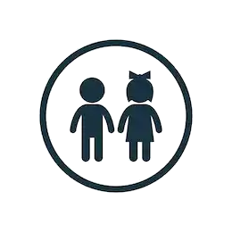

En los Centros de Desarrollo Infantil - CDI se presta un servicio institucional que busca garantizar la educación inicial, cuidado y nutrición a niños y niñas menores de 5 años, en el marco de la Atención Integral y Diferencial,
a través de acciones pedagógicas, de cuidado calificado y nutrición, así como la realización de gestiones para promover los derechos a la salud, protección y participación, que permitan favorecer su desarrollo integral.
¿A quién beneficia?
Niños y niñas de primera infancia, prioritariamente en el rango de edad de dos (2) años a menores de cinco (5) años y/o hasta que ingresen al grado de transición.
De todas maneras, si la condición
del niño o niña lo amerita y la Unidad de Servicio cuenta con las condiciones requeridas (espacio de Sala Cuna) para atender a esta población, podrán ser atendidos niños y niñas entre los seis (6) meses y los dos (2)
años de edad.
Requisitos
Para acceder a los servicios de un CDI, se deberá consultar con la disponibilidad del cupo en el CDI o Centro Zonal y posteriormente presentar una solicitud de inscripción acompañada de los siguientes documentos:
Fotocopia del Registro civil de nacimiento.
Fotocopia de puntaje SISBEN o carta de declaración ante el Ministerio Público (Personería, Defensoría, Procuraduría)
de su condición de desplazado, cuando aplique.
Fotocopia de certificado de afiliación a salud vigente.
Fotocopia
del carné de salud infantil (puede ser fotocopia de la curva de crecimiento y desarrollo).
El diagnóstico médico en caso de niños con discapacidad, el
cual no es requisito para el ingreso, pero si para el seguimiento en el proceso de la atención.
Fotocopia del carné de vacunación al día según edad
(puede ser carné de salud infantil).
Para identificar lugar de residencia, fotocopia de un recibo público cuando sea necesario.
Fotocopia de documento de identidad del padre, madre y/o cuidador responsable.
Certificado de pertenencia a comunidad
indígena, afrodescendientes, raizales y palenqueros, y Rom ó que se ha auto referido como tal.